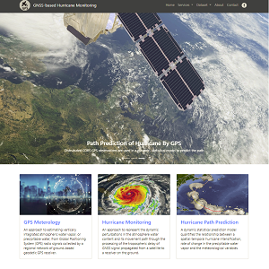
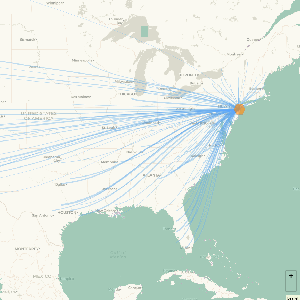
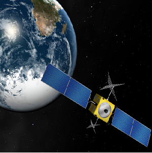
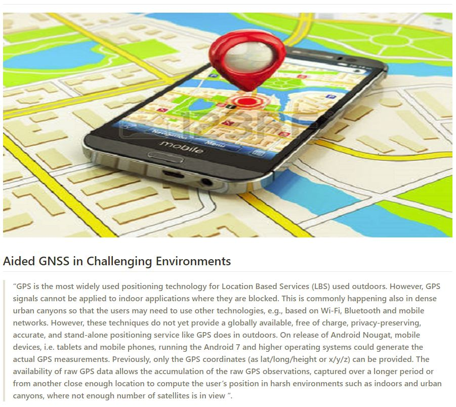
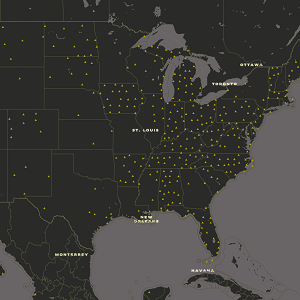

GPS and Geomatics repositories

Hurricane Path Prediction
By using 24h GPS data monitor and forecast the future hurricanes

SLR induced Migration Map
Geovisualization of predicted U.S. migration due to sea level rise (SLR)

GPS Meteorology
A story map showing how GPS can be used for the meterological purposes

Aided GNSS in Challenging Environments
GNSS Based Mobile Positioning In The Harsh Environments

Meteorology-Basemap
The steps to design a GPS-Meteorology basemap
Resume
Personal Resume